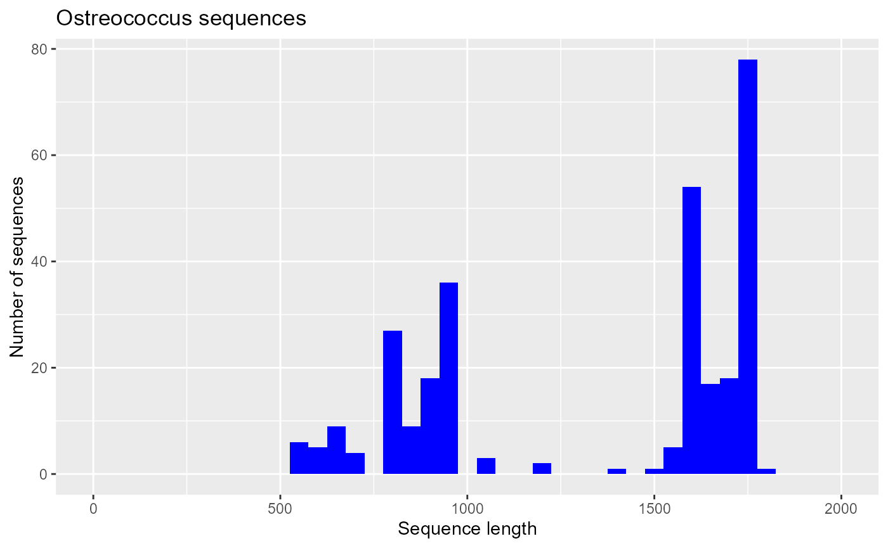
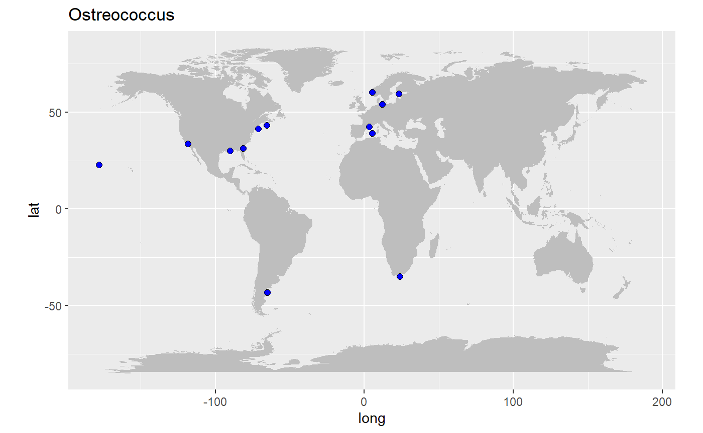
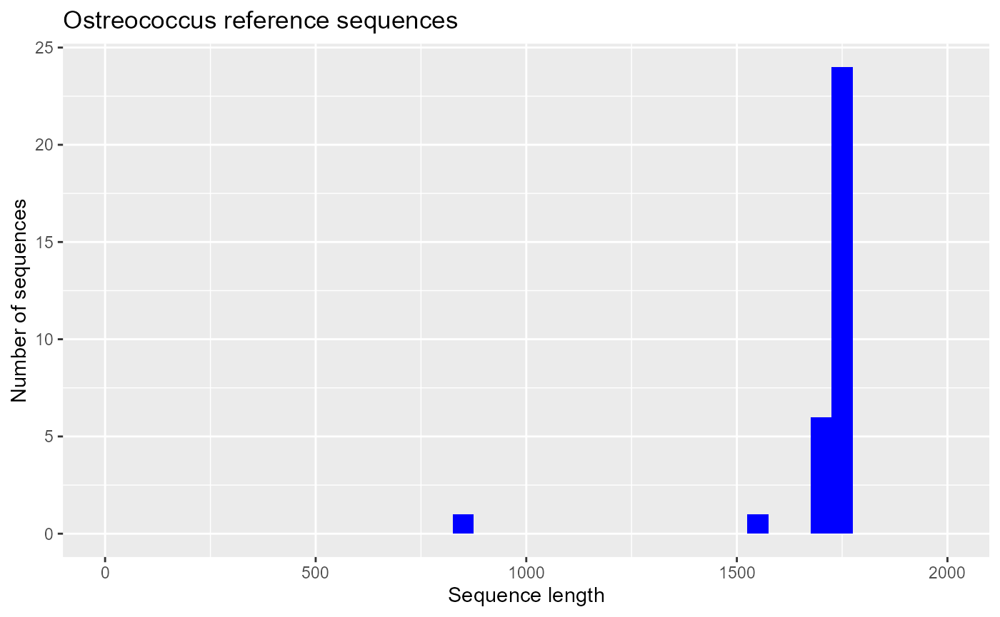
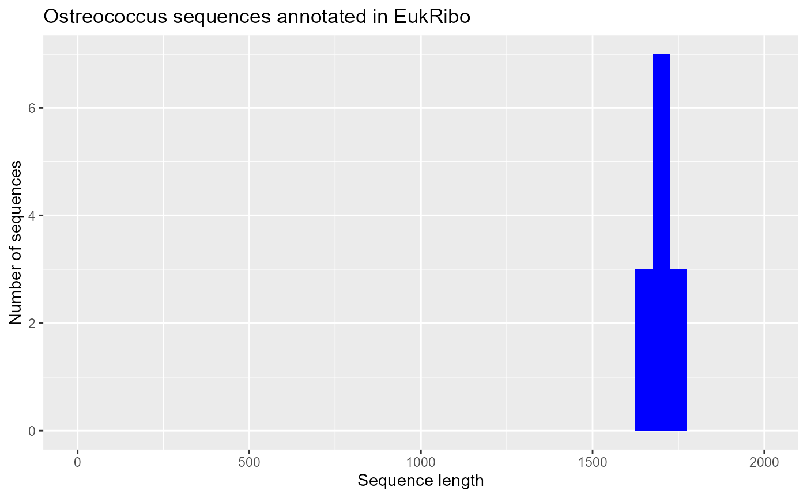

The PR2 database is provided as a R package called pr2database. This page provides instruction to install and use the package.
Important Note. While the PR2 web interface provides access to the Ribosomal Operon Database sequences, this is not the case of the pr2database package that only provides access to 18S rRNA sequences.
Installation
- Requires R version 4.4
From GitHub
Install from the GitHub web site using the devtools package
install.packages("devtools")
devtools::install_github("pr2database/pr2database")* installing *source* package 'pr2database' ...
** R
** data
*** moving datasets to lazyload DB
** byte-compile and prepare package for lazy loading
** help
*** installing help indices
converting help for package 'pr2database'
finding HTML links ... fini
pr2 html
** building package indices
** testing if installed package can be loaded
*** arch - i386
*** arch - x64
* DONE (pr2database)
In R CMD INSTALLNote: You may have to install some packages required by pr2database if they are not installed on your machine
Launch shiny interface
pr2database::run_app()Analysing the database using R
Loading the database
The PR2 database is provided as a function that returns data frame (or a tibble). This is a join between the following tables:
- pr2_main
- pr2_taxonomy
- pr2_sequence
- pr2_metadata
- pr2_traits
- pr2_silva
- eukribo
- taxonomy_worms
- taxonomy_gbif
library("pr2database")
pr2 <- pr2_database()
# List of the different columns available - see the help of the package for information on each field
colnames(pr2)
#> [1] "pr2_accession" "domain"
#> [3] "supergroup" "division"
#> [5] "subdivision" "class"
#> [7] "order" "family"
#> [9] "genus" "species"
#> [11] "genbank_accession" "start"
#> [13] "end" "label"
#> [15] "gene" "organelle"
#> [17] "reference_sequence" "added_version"
#> [19] "edited_version" "edited_by"
#> [21] "edited_remark" "remark"
#> [23] "taxo_id" "taxo_edited_version"
#> [25] "taxo_edited_by" "taxo_remark"
#> [27] "reference" "mixoplankton"
#> [29] "worms_id" "worms_marine"
#> [31] "worms_brackish" "worms_freshwater"
#> [33] "worms_terrestrial" "seq_id"
#> [35] "sequence" "sequence_length"
#> [37] "ambiguities" "sequence_hash"
#> [39] "gb_date" "gb_division"
#> [41] "gb_definition" "gb_organism"
#> [43] "gb_organelle" "gb_taxonomy"
#> [45] "gb_strain" "gb_culture_collection"
#> [47] "gb_clone" "gb_isolate"
#> [49] "gb_isolation_source" "gb_specimen_voucher"
#> [51] "gb_host" "gb_collection_date"
#> [53] "gb_environmental_sample" "gb_country"
#> [55] "gb_lat_lon" "gb_collected_by"
#> [57] "gb_note" "gb_publication"
#> [59] "gb_authors" "gb_journal"
#> [61] "eukref_name" "eukref_source"
#> [63] "eukref_env_material" "eukref_env_biome"
#> [65] "eukref_biotic_relationship" "eukref_specific_host"
#> [67] "eukref_geo_loc_name" "eukref_notes"
#> [69] "pr2_sample_type" "pr2_sample_method"
#> [71] "pr2_latitude" "pr2_longitude"
#> [73] "pr2_depth" "pr2_ocean"
#> [75] "pr2_sea" "pr2_sea_lat"
#> [77] "pr2_sea_lon" "pr2_country"
#> [79] "pr2_location" "pr2_location_geoname"
#> [81] "pr2_location_geotype" "pr2_location_lat"
#> [83] "pr2_location_lon" "pr2_sequence_origin"
#> [85] "metadata_remark" "pr2_continent"
#> [87] "pr2_country_geocode" "pr2_country_lat"
#> [89] "pr2_country_lon" "eukribo_UniEuk_taxonomy_string"
#> [91] "eukribo_V4" "eukribo_V9"
#> [93] "silva_taxonomy" "organelle_code"
#> [95] "species_url"Install and load the libraries
The following examples makes use of the specifc R libraries
Install the libraries
install.packages("dplyr") # For filtering the data
install.package("ggplot2") # To plot data
install.package("maps") # To plot maps
source("https://bioconductor.org/biocLite.R") # This package is on Bioconductor
biocLite("Biostrings") # To save fasta filesLoad the libraries
Selecting sequences from a specific taxon
Let us select all the available sequences for the Mamiellophyceae Ostreococcus
# Filter only the sequences for which the column genus contains Ostreococcus
pr2_ostreo <- pr2 %>%
dplyr::filter(genus == "Ostreococcus")
# Select only the columns of interest
pr2_ostreo <- pr2_ostreo %>%
dplyr::select( genbank_accession, species,
pr2_sample_type, gb_strain, gb_clone,
pr2_latitude, pr2_longitude,
sequence_length, sequence, reference_sequence,
eukribo_UniEuk_taxonomy_string)
pr2_ostreo
#> # A tibble: 294 × 11
#> genbank_accession species pr2_sample_type gb_strain gb_clone pr2_latitude
#> <chr> <chr> <chr> <chr> <chr> <dbl>
#> 1 AF525872 Ostreococc… environmental NA UEPACIp5 NA
#> 2 EU562149 Ostreococc… environmental NA IND2.6 NA
#> 3 AY425309 Ostreococc… environmental NA RA01041… NA
#> 4 GQ426346 Ostreococc… culture CB6 NA NA
#> 5 KC583118 Ostreococc… environmental NA RS.12f.… NA
#> 6 JN862906 Ostreococc… culture BCC48000 NA NA
#> 7 JQ692065 Ostreococc… environmental NA PUPF_60 -43.3
#> 8 FR874749 Ostreococc… environmental NA 1815F12 60.3
#> 9 FJ431431 Ostreococc… environmental NA RA07100… NA
#> 10 EU561670 Ostreococc… environmental NA IND1.11 -35.0
#> # ℹ 284 more rows
#> # ℹ 5 more variables: pr2_longitude <dbl>, sequence_length <int>,
#> # sequence <chr>, reference_sequence <int>,
#> # eukribo_UniEuk_taxonomy_string <chr>Exporting the sequences to fasta
We will save the Ostreococcus sequences to a FASTA file. This is easy done with the bioconductor package BioStrings.
# Importing the sequence in a Biostring set
seq_ostreo <- Biostrings::DNAStringSet(pr2_ostreo$sequence)
# Constructing the name of each sequecne (the first line of the fasta file)
# using the genbank accession, species name, strain name and clone name
names(seq_ostreo) <- paste(pr2_ostreo$genbank_accession, pr2_ostreo$species,
"strain",pr2_ostreo$gb_strain,
"clone",pr2_ostreo$gb_clone,
sep="|")
# Displaying the Biostring set
seq_ostreo
#> DNAStringSet object of length 294:
#> width seq names
#> [1] 1766 ACCTGGTTGATCCTGCCAGTAG...AGGTGAACCTGCAGAAGGATCA AF525872|Ostreoco...
#> [2] 836 AAAGCTCGTAGTCGGATTTTGG...TCTGGGCCGCACGCGCGCTACA EU562149|Ostreoco...
#> [3] 1728 GCCAGTAGTCATATGCTTGTCT...GAGAAGTCGTAACAAGGTTTCC AY425309|Ostreoco...
#> [4] 1652 AGCCATGCATGTCTAAGTATAA...TGGATTACCGTGGGAAATTCGT GQ426346|Ostreoco...
#> [5] 1764 CCTGGTTGATCCTGCCAGTAGT...TAGGTGAACCTGCAGAAGGATC KC583118|Ostreoco...
#> ... ... ...
#> [290] 672 GCTCGTAGTCGGACTTTGGCTG...TAGTTGGTGGAGTGATTTGTCT KT860809|Ostreoco...
#> [291] 540 ATAGCGTATATTTAAGTTGTTG...AAGGCTGAAACTTAAAGGAATT AY465412|Ostreoco...
#> [292] 540 ATAGCGTATATTTAAGTTGTTG...AAGGCTGAAACTTAAAGGAATT AY465413|Ostreoco...
#> [293] 540 ATAGCGTATATTTAAGTTGTTG...AAGGCTGAAACTTAAAGGAATT AY465414|Ostreoco...
#> [294] 1760 CCTGGTTGATCCTGCCAGTAGT...TCCGTAGGTGAACCTGCGGAAG CAID01000012|Ostr...
# Saving the sequences as a fasta file
Biostrings::writeXStringSet(seq_ostreo, "examples/pr2_ostreo.fasta", width = 80)The fasta file will look as follows
>AF525872|Ostreococcus_lucimarinus|strain|NA|clone|UEPACIp5
ACCTGGTTGATCCTGCCAGTAGTCATATGCTTGTCTCAAAGATTAAGCCATGCATGTCTAAGTATAAGCGTTATACTGTG
AAACTGCGAATGGCTCATTAAATCAGCAATAGTTTCTTTGGTGGTGTTTACTACTCGGATAACCGTAGTAATTCTAGAGC
TAATACGTGCGTAAATCCCGACTTCGGAAGGGACGTATTTATTAGATAAAGACCG...
>EU562149|Ostreococcus_lucimarinus|strain|NA|clone|IND2.6
AAAGCTCGTAGTCGGATTTTGGCTGAGAACGGTCGGTCCGCCGTTAGGTGTGCACTGACTGGTCTCAGCTTCCTGGTGAG
GAGGTGTGCTTCATCGCCACTTAGTCACCGTGGTTACTTTGAAAAAATTAGAGTGTTCAAAGCGGGCTTACGCTTGAATA
TATTAGCATGGAATAACACCATAGGACTCCTGTCCTATTTCGTTGGTCTCGGGACGGGAGTAATGATTAAGATGAACAGT
TGGGGGCATTCGTATTTCATTGTCAGAGGTGAAATTCTTGGATTT...
>AY425309|Ostreococcus_lucimarinus|strain|NA|clone|RA010412.39
GCCAGTAGTCATATGCTTGTCTCAAAGATTAAGCCATGCATGTCTAAGTATAAGCGTTATACTGTGAAACTGCGAATGGC
TCATTAAATCAGCAATAGTTTCTTTGGTGGTGTTTACTACTCGGATAACCGT...Doing an histogram of the sequence length
ggplot(pr2_ostreo) +
geom_histogram(aes(sequence_length), binwidth = 50, fill="blue") +
xlim(0,2000) + xlab("Sequence length") + ylab("Number of sequences") +
ggtitle("Ostreococcus sequences")
Drawing a map of sequence locations
library(maps)
world <- map_data("world")
ggplot() +
geom_polygon(data = world, aes(x=long, y = lat, group = group), fill="grey") +
coord_fixed(1.3) +
geom_point(data=pr2_ostreo, aes(x=pr2_longitude, y=pr2_latitude), fill="blue", size=2, shape=21) +
ggtitle("Ostreococcus")
Selecting reference sequences
Reference sequences are a subset of sequences that are representative of the major taxa in a group. Usually they are long sequences and can be used to build a reference alignment (compare the histogram of reference to that all PR2 sequences).
pr2_ostreo_reference <- pr2_ostreo %>%
filter(reference_sequence == 1)
pr2_ostreo_reference
#> # A tibble: 32 × 11
#> genbank_accession species pr2_sample_type gb_strain gb_clone pr2_latitude
#> <chr> <chr> <chr> <chr> <chr> <dbl>
#> 1 AF525872 Ostreococc… environmental NA UEPACIp5 NA
#> 2 JN862906 Ostreococc… culture BCC48000 NA NA
#> 3 AY425308 Ostreococc… culture RCC 356 1 NA
#> 4 AF525852 Ostreococc… environmental NA UEPACDp1 NA
#> 5 AF525858 Ostreococc… environmental NA UEPAC30… NA
#> 6 AF525857 Ostreococc… environmental NA UEPAC05… NA
#> 7 AF525861 Ostreococc… environmental NA UEPACGp3 NA
#> 8 AF525848 Ostreococc… environmental NA UEPACAp1 NA
#> 9 AF525859 Ostreococc… environmental NA UEPAC30… NA
#> 10 AF525855 Ostreococc… environmental NA UEPACXp1 NA
#> # ℹ 22 more rows
#> # ℹ 5 more variables: pr2_longitude <dbl>, sequence_length <int>,
#> # sequence <chr>, reference_sequence <int>,
#> # eukribo_UniEuk_taxonomy_string <chr>
ggplot(pr2_ostreo_reference) +
geom_histogram(aes(sequence_length), binwidth = 50, fill="blue") +
xlim(0,2000) + xlab("Sequence length") + ylab("Number of sequences") +
ggtitle("Ostreococcus reference sequences")
Selecting sequences annotated in the EukRibo database
EukRibo is a high quality 18S reference database (Berney et al. 2022)
pr2_ostreo_eukribo <- pr2_ostreo %>%
filter(!is.na(eukribo_UniEuk_taxonomy_string))
pr2_ostreo_eukribo
#> # A tibble: 13 × 11
#> genbank_accession species pr2_sample_type gb_strain gb_clone pr2_latitude
#> <chr> <chr> <chr> <chr> <chr> <dbl>
#> 1 GQ426347 Ostreococc… culture BCC40000d NA NA
#> 2 AY425308 Ostreococc… culture RCC 356 1 NA
#> 3 JN862916 Ostreococc… culture BCC69000 NA NA
#> 4 AB058376 Ostreococc… culture MBIC10636 NA NA
#> 5 AY425311 Ostreococc… culture RCC 393 NA NA
#> 6 AY425310 Ostreococc… culture RCC 143 NA NA
#> 7 JN862917 Ostreococc… culture BCC7000 NA NA
#> 8 GQ426331 Ostreococc… culture BCC1000 NA NA
#> 9 AY425313 Ostreococc… culture RCC 501 NA NA
#> 10 AY329635 Ostreococc… NA NA NA NA
#> 11 JN862915 Ostreococc… culture BCC68000 NA NA
#> 12 AY329636 Ostreococc… NA NA NA NA
#> 13 AY425307 Ostreococc… culture RCC 344 NA NA
#> # ℹ 5 more variables: pr2_longitude <dbl>, sequence_length <int>,
#> # sequence <chr>, reference_sequence <int>,
#> # eukribo_UniEuk_taxonomy_string <chr>
ggplot(pr2_ostreo_eukribo) +
geom_histogram(aes(sequence_length), binwidth = 50, fill="blue") +
xlim(0,2000) + xlab("Sequence length") + ylab("Number of sequences") +
ggtitle("Ostreococcus sequences annotated in EukRibo")